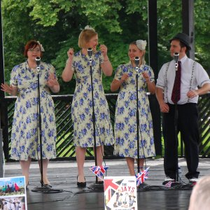

On this page you will find Songs and Testimonials.
Songs
Here are some of the songs that I can perform for you.
Snippets of many of these can be found in my 'Showreel'.
 |
ROCK N ROLL / JIVE HITS |
Chuck Berry: Johnny B. Goode; Rock and Roll Music
Bill Haley and His Comets: Rock Around the Clock; Shake, Rattle and Roll; See You Later Alligator
Elvis: Blue Suede Shoes; Hound Dog; All Shook Up; Jailhouse Rock
Eddie Cochran: C'mon Everybody
Danny and The Juniors: Rock And Roll Is Here To Stay, At the Hop
The Everly Brothers: Wake up Little Susie; Bye, Bye Love
Thurston Harris: Little Bitty Pretty One
Jerry Lee Lewis: Great Balls of Fire
Chubby Checker: Let's Twist Again
Buddy Holly: That'll Be the Day
Richie Valens: La Bamba
Frankie Lymon: Why Do Fools Fall in Love
Dion and The Belmonts: A Teenager in Love
The Penguins: Earth Angel (Will You Be Mine)
Little Anthony and The Imperials: Tears on my Pillow
Johnny Tillotson: Poetry in Motion
Cliff Richard: Living Doll, Move It
Chris Montez: Let's Dance
Roy Orbison: Ooby Dooby; Oh, Pretty Woman
Fats Domino: I'm Walking
Shakin' Stevens: Green Door; This Ole House
The Platters: Harbour Lights
 |
CROONER / SWING HITS |
Frank Sinatra: Fly Me To The Moon; Cheek To Cheek; Come Fly With Me; You Make Me Feel So Young
Bobby Darin: Mack the Knife; Beyond the Sea; Things
Dean Martin: Memories Are Made Of This, How D'Ya Like Your Eggs in the Morning
Nat King Cole: L.O.V.E.
Michael Bublé: You've Got A Friend In Me
XMAS CLASSICS |
Michael Bublé: Holly Jolly Christmas; Frosty The Snowman
Michael Bublé and Puppini Sisters: Jingle Bells
Perry Como: It’s Beginning To Look A Lot Like Christmas
Dean Martin: Let it Snow, Let it Snow, Let it Snow
Bing Crosby: Santa Claus is Comin’ to Town; White Christmas
Frank Sinatra: I’ll Be Home for Christmas, Rudolph the Red-Nosed Reindeer
Dickie Valentine: Christmas Alphabet
Nat King Cole: The Chrismas Song
Tony Bennett: Sleigh Ride
Elvis: Blue Christmas, Lonely This Christmas
Chuck Berry: Run, Run, Rudolph
Bobby Helms: Jingle Bell Rock
Bobby Day: Rockin' Robin
Shakin' Stevens: Merry Xmas Everyone
Testimonials
If you have any comments, please do contact me.
J. Franklin (Fete)"My expectations were vastly exceeded! Great quality voice and equipment made for a splendid performance.""'Andy B Goode' is a splendid performer who gives consistently good performance across a wide range of singing styles." "'La Bamba' is especially good to hear. Perfect for weddings, christenings, birthdays etc. Would highly recommend." |
|
E. Cutler (Dosthill, Vintage Fayre)"Andy B Goode exceeded our expectations, so professional, an excellent act which was very good value for money.""Having Andy B Goode at our vintage fair really set the scene and made the vintage context." "It was lovely to see people of all ages stop, sit and listen, sing along or boogie on down." |
|
C. Kirkwood (Derby, Birthday Party)"Your act was first class, very professional, Having heard you before we knew you would do a great job and we weren't disappointed. Great value for a special evening.""If anyone is looking for a fun, professional singing act, 'Andy B Goode' is the guy for you." "it doesn't matter the age group as the type of songs 'Andy B Goode' sings, he gets everybody singing and dancing along. Highly recommended." |
|
L. Ward (Norton-Juxta-Twycross, Village Fair)"5/5…. act met my expectations, Andy B Goode was fantastic, great range of songs and always entertaining""very entertaining - great show to sit and watch from start to finish, but also worked well as background music for people that were wandering in and out of the refreshment area, at our village fair" "The song selection was great and Andrew performance is suitable for a wide variety of events" |
|
E. Jones (Birthday Party)"Totally! Fab evening completely brought to life with the excellent entertainment!""Everyone commented about the great atmosphere with your music. A great party atmosphere and very pro! Loved it!" |
|
P. Reed (Birthday Party)"The act was very good and met the expectations of the audience""Great evening - people singing along with some rock classics and a great party atmosphere" |
|
S. Britton (Tamworth Bandstand)"it was great, lot of familiar tunes which people enjoyed and danced to!""Very upbeat and familiar set, great for a party, and for getting people dancing!" |
 |
Contact me
- Phone: 07979 536591
- email: Andy@AndyBGoode.com
- Facebook: AndyBGoode
- Instagram: andybgoodevocalist
- YouTube: Andy B Goode
- Twitter: AndyBGoode
- website: v2.0.13